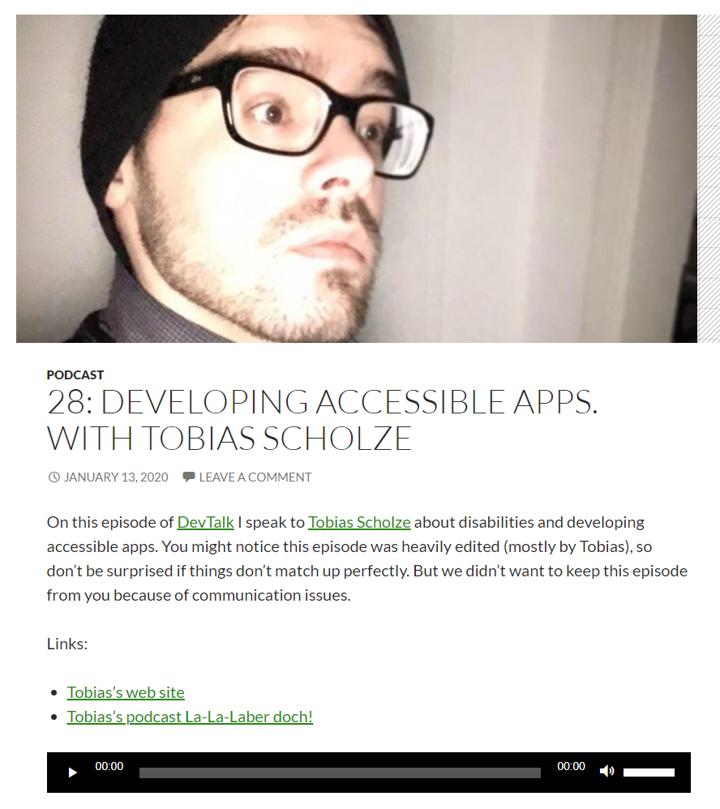

Was für ein Abenteuer. Ich durfte bei Kerry Lothrop (Twitter) in seinem Podcast DevTalks zu Gast sein. Wir sprachen über Accessibility in der modernen Softwareentwicklung mit Schwerpunkt auf Sprachfehler.
 Es war super von Kerry die Chance bekommen zu haben einmal in einem großen, englischsprachigen Podcast als Gast teilzunehmen. Zeitgleich zeigt es mir auf, wo meine Limits sind.
So kam meiner Meinung nach nicht das beste Ergebnis heraus und war doch etwas beschämt über meine Leistungs. Nichtsdestotrotz hat Kerry diesen Podcast veröffentlich über was ich mich wirklich freue.
Merci dir!
Back